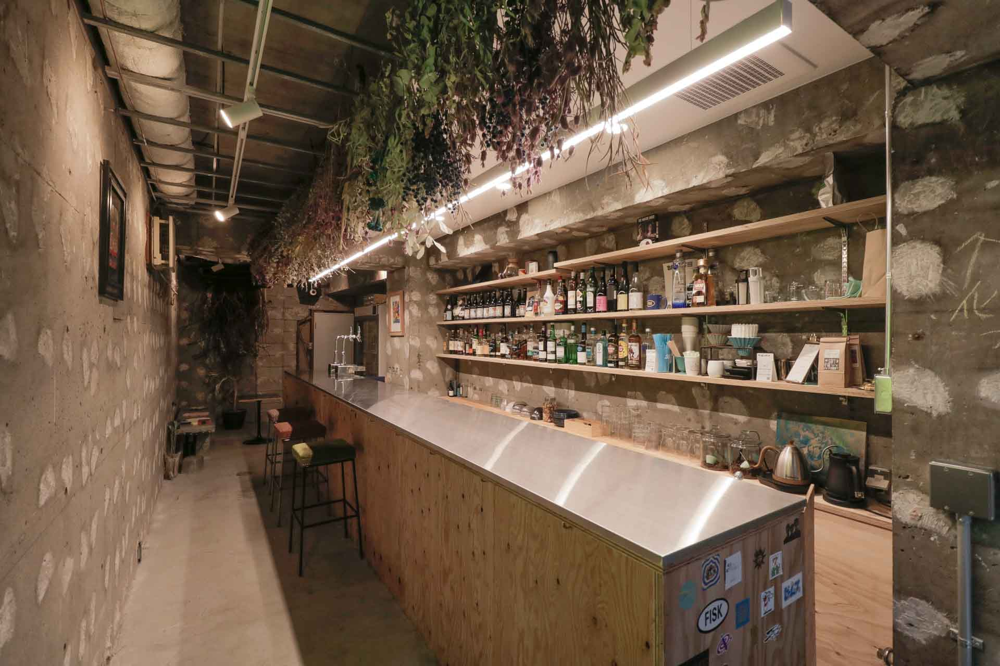
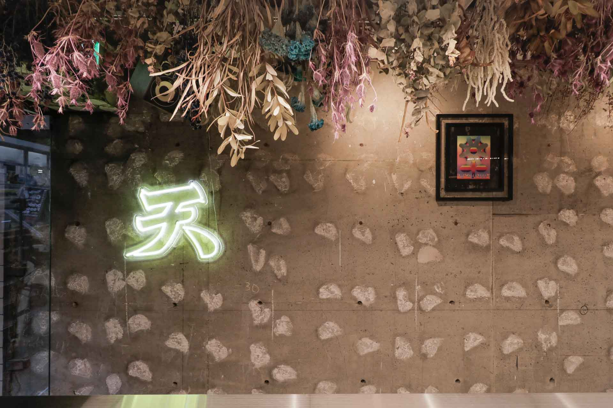
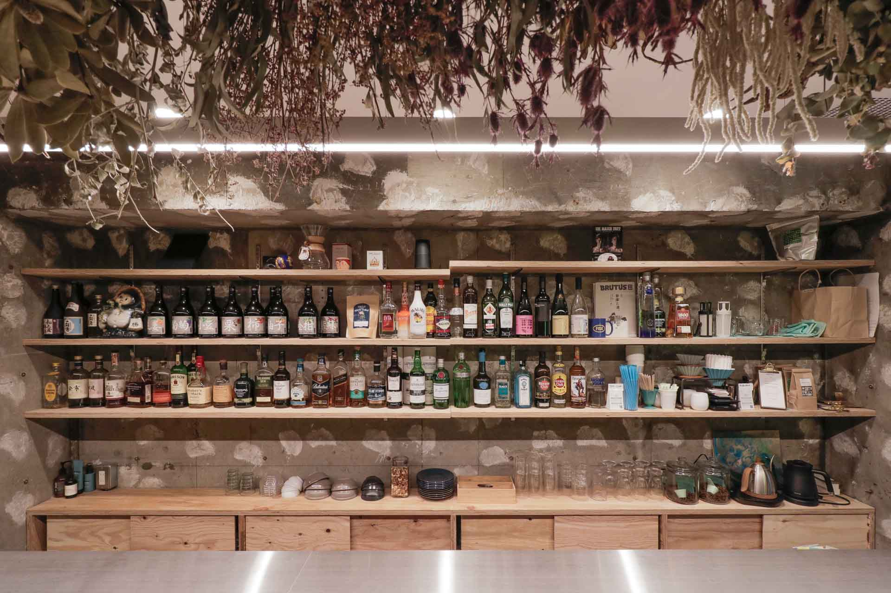

{{#extend "pages"}}
  {{#content "main"}}
    <main class="main">

      <section class="contents">
        <h2 class="contents__title">
          TEN CLUB KOENJI
        </h2>
        <h3 class="contents__subtitle">
          Suginami-ku,Tokyo,Japan
        </h3>

        <ul class="contents__list">
          <li class="contents__item">
            <a href="img/work/tenclub/tenclub_01.jpg" data-lightbox="works02">
              
            </a>
          </li>
          <li class="contents__item">
            <a href="img/work/tenclub/tenclub_02.jpg" data-lightbox="works02">
              
            </a>
          </li>
          <li class="contents__item">
            <a href="img/work/tenclub/tenclub_03.jpg" data-lightbox="works02">
              
            </a>
          </li>
          <li class="contents__item">
            <a href="img/work/tenclub/tenclub_04.jpg" data-lightbox="works02">
              
            </a>
          </li>
          <li class="contents__item">
            <a href="img/work/tenclub/tenclub_05.jpg" data-lightbox="works02">
              
            </a>
          </li>
          <li class="contents__item">
            <a href="img/work/tenclub/tenclub_06.jpg" data-lightbox="works02">
              
            </a>
          </li>
          <li class="contents__item">
            <a href="img/work/tenclub/tenclub_07.jpg" data-lightbox="works02">
              
            </a>
          </li>
          <li class="contents__item">
            <a href="img/work/tenclub/tenclub_08.jpg" data-lightbox="works02">
              
            </a>
          </li>
        </ul>

        <p class="contents__text">
					Data.<br>
					竣工：2021年11月<br>
					所在地：東京都杉並区<br>
					用途：バー<br>
					構造：RC造<br>
					設計：生田一希建築設計事務所<br>
					施工：Earthy Blue Inc.<br>
					設計期間：2021.07-2021.10<br>
					施工期間：2021.10-2021.11<br>
					延床面積：23.15㎡
        </p>
      </section>
    </main>
  {{/content}}
{{/extend}}
